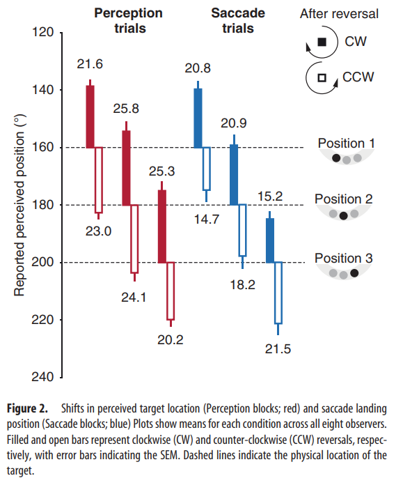

One Sample T test
Separate one-sample t tests revealed the absolute magnitude of the shift away from
veridical to be significantly different from zero for both the Perception (M =23.6, SD =7.9, t(7) =8.5, p<0.001)
and the Saccade blocks (M =18.8, SD = 10.0, t(7) = 5.3, p < 0.005)
Repeated-measures ANOVA
Repeated-measures ANOVA revealed a significant main effect of target location (loc) on absolute shift (loc 160° M =20.2, SD =9.0, loc =180°: M = 22.5 SD =11.0, loc 200°: M = 20.7
SD = 9.6, F(2) ]= 3.77, p < 0.05)
Individual post hoc t tests
Individual post hoc t tests revealed that absolute shift of the target at 180° was significantly
greater than the absolute shift of the target that was presented at 160° (t= 2.85, p <0.01).
Anova
Furthermore, the ANOVA revealed a significant three-way interaction effect of reversal direction,
block type and target location (F(2) = 13.63, p < 0.001).
This interaction is best understood as the difference between Perception and Saccade blocks being largest for the off-center locations with illusory shifts toward the midline, and smallest for off-center
locations with illusory shifts away from the midline.